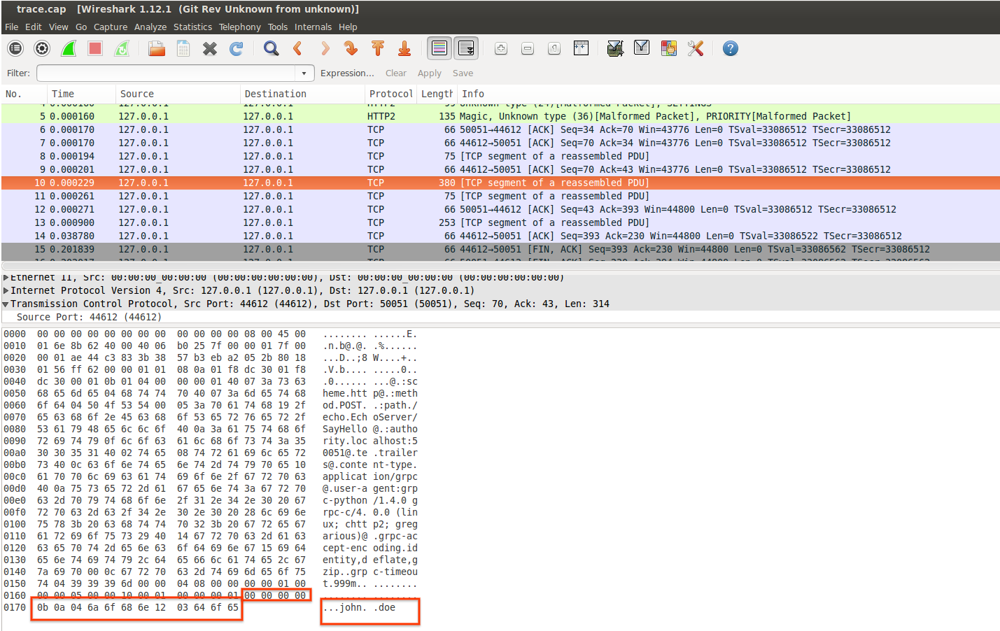
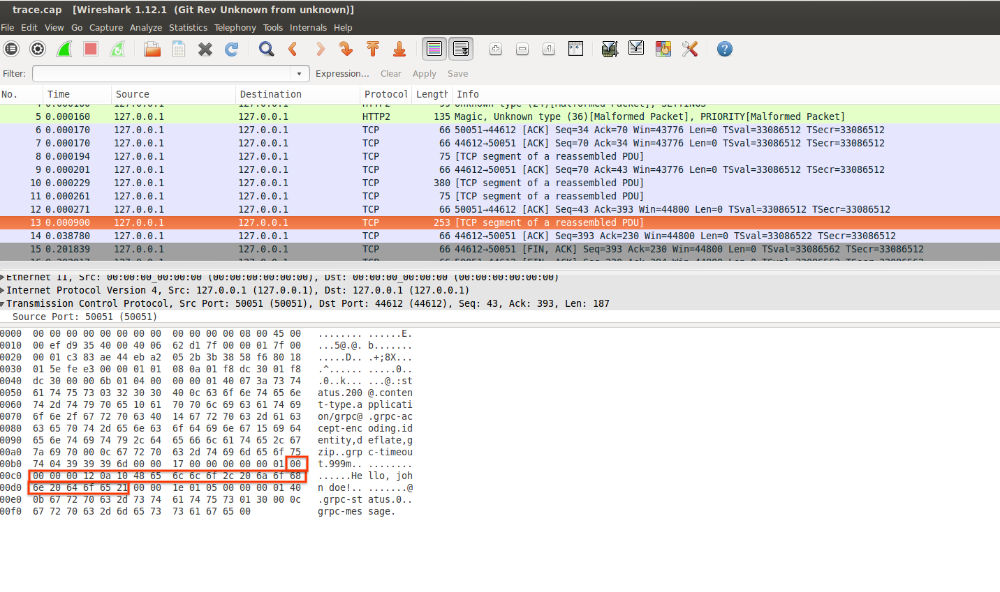

ARTICLES
gRPC with curl
Sample procedure to use curl to make a gRPC call.
gRPC is built on top of HTTP2 and is used to make remote procedure calls using protocol buffers.
gRPC by design is fast, efficient, extensible and portable across many languages. The only real way to invoke the remote procedure is to use a generated gRPC client which internally does all the marshalling to encode the protbuf messages into gRPC’s wire format:
The procedure described below is a mechanism to invoke a remote GRPC call using and http2-enabled curl and nghttp2 client alone.
This does not serve any real practical purposes other than an investigation into dissecting what goes on in the RPC. The only usage for this is if running a full gRPC client is not possible and what is available is the serialized protocol buffer message to transmit.
You can run the sample here by either installing protobuf and gRPC or entirely through the docker container salrashid123/grpc_curl.
You can find the source here
QuickStart using docker
src/Dockerfile image includes the precompiled gRPC python client/server and curl+http2 clients. If you want, you can use this docker file entirely to test with.
First familiarize and verify curl and nghttp2 works from within the container:
docker run salrashid123/grpc_curl curl -v --http2 https://www.google.com/
docker run salrashid123/grpc_curl nghttp -vn https://www.google.com/
Make the binary file with the delimited gRPC message:
mkdir gcurl
cd gcurl
docker run -v `pwd`:/tmp/gcurl/ \
-t salrashid123/grpc_curl \
python /app/message_util.py write /tmp/gcurl/frame.bin
Start the gRPC server:
docker run -p 50051:50051 salrashid123/grpc_curl python /app/server.py
Invoke the gRPC server with curl:
docker run -v `pwd`:/tmp/gcurl/ \
--add-host main.esodemoapp2.com:127.0.0.1 \
--net=host salrashid123/grpc_curl \
curl -v -k --raw -X POST --http2 \
-H "Content-Type: application/grpc" \
-H "TE: trailers" \
--data-binary @/tmp/gcurl/frame.bin \
https://main.esodemoapp2.com:50051/echo.EchoServer/SayHello -o /tmp/gcurl/resp.bin
Verify the response message:
docker run -v `pwd`:/tmp/gcurl/ -t salrashid123/grpc_curl python /app/message_util.py read /tmp/gcurl/resp.bin
Invoke gRPC with curl locally
The following steps outlines how to call the gRPC server with curl if curl, protoc, gRPC server runs localy
Installing curl and nghttp2
If you would rather see what is happening in detail, the first step is to install curl and/or nghttp2 clients that are http/2 aware.
apt-get update -y && \
apt-get install -y unzip \
curl python openssl python-setuptools \
python-pip python-dev build-essential \
nghttp2 libnghttp2-dev libssl-dev
curl -OL https://curl.haxx.se/download/curl-7.54.0.tar.bz2 && \
tar -xvjf curl-7.54.0.tar.bz2 && \
cd curl-7.54.0 && \
./configure --with-nghttp2 --with-ssl && \
make && \
make install && \
ldconfig
Verify nghttp2 is enabled properly:
nghttp -vn https://www.google.com/
[ 0.060] Connected
[ 0.086][NPN] server offers:
* grpc-exp
* h2
* http/1.1
The negotiated protocol: h2
Verify curl is enabled with http/2:
curl -v --http2 https://www.google.com/
* Using HTTP2, server supports multi-use
* Connection state changed (HTTP/2 confirmed)
Installing gRPC support for python
Set up a client to run the gRPC server locally as well as the client to generate and save the protobuf files.
This is preferably done through virtualenv:
git clone https://github.com/salrashid123/grpc_curl
cd grpc_curl/src/
virtualenv env --no-site-packages
source env/bin/activate
pip install grpcio-tools hexdump
python -m grpc_tools.protoc -I . --python_out=. --grpc_python_out=. echo.proto
Generate the gRPC wireformat binary file
The first step is to actually write the protobuf message to a file in the wireformat.
The following python code creates a protobuf message and converts it to the wireformat: - src/message_util.py
def w(filename):
req = echo_pb2.EchoRequest(firstname='john', lastname='doe')
msg = binascii.b2a_hex(req.SerializeToString())
frame = '00' + hex(len(msg)/2).lstrip("0x").zfill(8) + msg
print 'Raw Encode: ' + frame
f = open(filename, "wb+")
f.write(binascii.a2b_hex(frame))
f.close()
to invoke this command, simply run:
python message_util.py write frame.bin
The above snippet writes the message to a binary file in your local directory. For manual encoding to wireformat starting with just the protobuf:
Start with the protbuf in a file by itself (no encoding done as above; just save a binary file with req.SerializeToString())
$ xxd frame.bin
00000000: 0a04 6a6f 686e 1203 646f 65 ..john..doe
$ xxd -p frame.bin
0a046a6f686e1203646f65
$ echo `xxd -p frame.bin` | xxd -r -p | protoc --decode_raw
1: "john"
2: "doe"
then
>>> msg = '0a046a6f686e1203646f65'
>>> print '00' + hex(len(msg)/2).lstrip("0x").zfill(8) + msg
000000000b0a046a6f686e1203646f65
echo -n '000000000b0a046a6f686e1203646f65' | xxd -r -p - frame.bin
From: https://grpc.io/docs/guides/wire.html
Delimited-Message → Compressed-Flag Message-Length Message
Compressed-Flag → 0 / 1 # encoded as 1 byte unsigned integer
Message-Length → {length of Message} # encoded as 4 byte unsigned integer
Message → *{binary octet}
compression:
00
message-length =>11(decimal) octets =>b(hex)
0000000b
msg:
0a046a6f686e1203646f65
so the Delimited-Message is
000000000b0a046a6f686e1203646f65
Run a gRPC server
You can either run the gRPC server directly if you have gRPC tools available:
cd src
python server.py
Transmit the wireformat binary file
Now that we have a file ‘frame.bin’ which is the data we want to transmit and save the output to ‘resp.bin’:
curl -v -k --raw -X POST --http2 \
-H "Content-Type: application/grpc" \
-H "TE: trailers" \
--data-binary @frame.bin \
https://main.esodemoapp2.com:50051/echo.EchoServer/SayHello -o resp.bin
nghttp -v -H ":method: POST" \
-H "Content-Type: application/grpc" \
-H "TE: trailers" \
--data=frame.bin \
https://main.esodemoapp2.com:50051/echo.EchoServer/SayHello
Note: main.esodemoapp2.com matches the certificates SAN and points back to localhost:
$ nslookup main.esodemoapp2.com 8.8.8.8
Server: 8.8.8.8
Address: 8.8.8.8#53
Non-authoritative answer:
Name: main.esodemoapp2.com
Address: 127.0.0.1
$ openssl x509 -in server_crt.pem -text -noout
...
Subject: C=US, ST=California, O=Google, OU=Enterprise, CN=main.esodemoapp2.com
...
X509v3 extensions:
X509v3 Basic Constraints:
CA:FALSE
Netscape Comment:
OpenSSL Generated Certificate
X509v3 Subject Alternative Name:
IP Address:192.168.1.3, IP Address:127.0.0.1, DNS:main.esodemoapp2.com
X509v3 Key Usage:
Digital Signature, Non Repudiation, Key Encipherment
Decode the Response
The response message is also in formatted so do the inverse of encoding
xxd -p resp.bin
00000000120a1048656c6c6f2c206a6f686e20646f6521
which is: - compression : 00
message length: 00000012 -> 18 decimal
message: 0a1048656c6c6f2c206a6f686e20646f6521
$ echo 0a1048656c6c6f2c206a6f686e20646f6521 | xxd -r -p | protoc --decode_raw
1: "Hello, john doe!"
You can use the message utility file do this decoding using the protobuf decoder to do the delimited message -> proto decoder:
$ python message_util.py read resp.bin
Got wire_message: 00000000120a1048656c6c6f2c206a6f686e20646f6521
Proto Decode: Hello, john doe!
def r(filename):
f = open(filename, "rb")
wire_msg = binascii.b2a_hex(f.read())
f.close()
print 'Got wire_message: ' + wire_msg
message_length = wire_msg[2:10]
msg = wire_msg[10:10+int(message_length, 16)*2]
r = echo_pb2.EchoReply()
r.ParseFromString(binascii.a2b_hex(msg))
print 'Proto Decode: ' + r.message
Invoking using the gRPC clients
The following simply details invoking the gRPC client/server as normal; nothing to do with curl+gRPC
Invoking directly
Assuming you have setup the virtualenv and installed grpc tools
python server.py
then
python client.py --host main.esodemoapp2.com 50051
Invoking using docker image
THe same client-server python gRPC scripts are present in a docker image
Server:
docker run -p 50051:50051 salrashid123/grpc_curl python /app/server.py
Client
docker run --net=host --add-host main.esodemoapp2.com:127.0.0.1 -t salrashid123/grpc_curl python /app/client.py main.esodemoapp2.com 50051
Appendix
gRPC Environment Variables
You can set some environment variables if you use client.py library for gRPC.
export GRPC_TRACE=all
export GRPC_VERBOSITY=DEBUG
TCPTraces for request and response gRPC calls
The following traces captures the request and response streams while done over a plain HTTP call:
EchoRequest

EchoResponse

gRPC Streaming
The gRPC server also has response streaming enabled on the “/echo.EchoServer/SayHelloStream” endpoint.
curl -vv -k --raw --http2 \
-H "Content-Type: application/grpc" \
-H "TE: trailers" \
--data-binary @frame.bin \
https://main.esodemoapp2.com:50051/echo.EchoServer/SayHelloStream -o resp.bin
where the response is in the format:
xxd resp.bin
00000000: 0000 0000 1f0a 1d53 7472 6561 6d69 6e67 .......Streaming
00000010: 2048 656c 6c6f 2031 202c 206a 6f68 6e20 Hello 1 , john
00000020: 646f 6521 0000 0000 1e0a 1c53 7472 6561 doe!.......Strea
00000030: 6d69 6e67 2048 656c 6c6f 2032 2c20 6a6f ming Hello 2, jo
00000040: 686e 2064 6f65 21 hn doe!
$ xxd -p resp.bin
000000001f
0a1d53747265616d696e672048656c6c6f2031202c206a6f686e20646f6521
000000001e
0a1c53747265616d696e672048656c6c6f20322c206a6f686e20646f6521
$ echo 0a1d53747265616d696e672048656c6c6f2031202c206a6f686e20646f6521 | xxd -r -p | protoc --decode_raw
1: "Streaming Hello 1 , john doe!"
$ echo 0a1c53747265616d696e672048656c6c6f20322c206a6f686e20646f6521 | xxd -r -p | protoc --decode_raw
1: "Streaming Hello 2, john doe!"
Using Golang http2 client
package main
import (
"bytes"
"crypto/tls"
"encoding/hex"
"fmt"
"io/ioutil"
"net/http"
"golang.org/x/net/http2"
)
func main() {
client := http.Client{
Transport: &http2.Transport{
TLSClientConfig: &tls.Config{
InsecureSkipVerify: true,
},
},
}
dat, err := ioutil.ReadFile("frame.bin")
if err != nil {
panic(err)
}
url := "https://main.esodemoapp2.com:50051/echo.EchoServer/SayHello"
fmt.Println("URL:>", url)
req, err := http.NewRequest("POST", url, bytes.NewReader(dat))
if err != nil {
panic(err)
}
req.Header.Set("TE", "trailers")
req.Header.Set("Content-Type", "application/grpc")
resp, err := client.Do(req)
if err != nil {
panic(err)
}
defer resp.Body.Close()
fmt.Println("response Status:", resp.Status)
fmt.Println("response Headers:", resp.Header)
body, err := ioutil.ReadAll(resp.Body)
if err != nil {
panic(err)
}
fmt.Println("response Body:", hex.Dump(body))
}
gives
$ go run src/main.go
URL:> https://main.esodemoapp2.com:50051/echo.EchoServer/SayHello
response Status: 200 OK
response Headers: map[Content-Type:[application/grpc] Grpc-Accept-Encoding:[identity,deflate,gzip]]
response Body: 00000000 00 00 00 00 12 0a 10 48 65 6c 6c 6f 2c 20 6a 6f |.......Hello, jo|
00000010 68 6e 20 64 6f 65 21 |hn doe!|
Using python hyper client
hyper is an experimental http2 client for python. You can use this as well but at the time of writing 8/25/17, I have not been enable to negotiate a proper SSL connection ALPN to proceed.
import ssl
from hyper import HTTPConnection
context = ssl.SSLContext(ssl.PROTOCOL_SSLv23)
context.load_verify_locations(cafile="CA_crt.pem")
context.set_alpn_protocols(['http/1.1', "spdy/1", 'spdy/2', "spdy/3"])
conn = HTTPConnection('main.esodemoapp2.com', 50051, ssl_context=context, secure=True)
params = binascii.a2b_hex(frame)
headers = {"Content-type": "application/grpc", "TE": "trailers"}
conn.request(method="POST", url="/echo.EchoServer/SayHello", body=params, headers=headers)
resp = conn.get_response()
print response.status, response.reason
#print(resp.read())